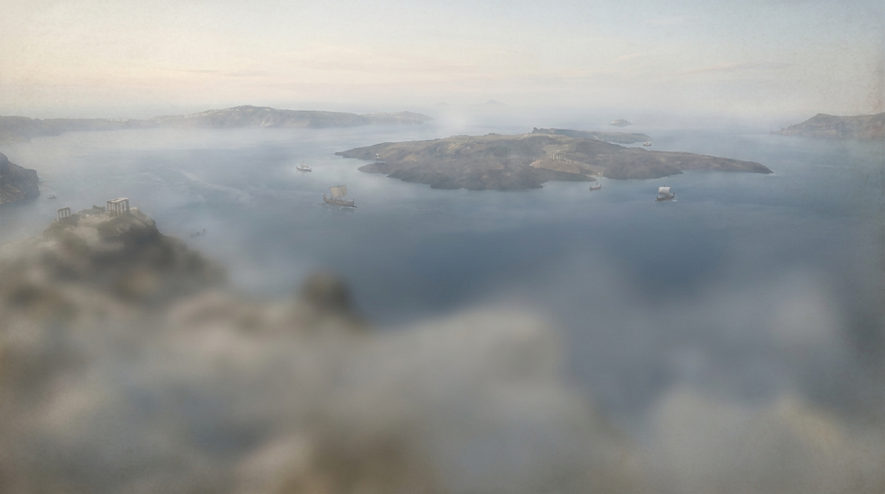

Le départ de Kalythéra
Une cité trop pleine, une mauvaise récolte de trop, et un tirage au sort qui décide qui reste.
Kalythéra n’a jamais été une grande cité, seulement une cité ancienne. Elle tient sur une plaine étroite entre deux collines calcaires, et pendant six générations cette plaine a suffi. Puis les fils ont eu des fils, on a bâti sur les terrasses, on a bâti sur les tombes, on a planté de l’orge jusque sur les pentes où rien ne pousse deux ans de suite. La septième année sèche, le conseil a cessé de discuter des greniers pour discuter du départ.
Ce n’est pas une histoire de conquête. Personne ne part chercher un empire : on part parce qu’on est douze familles de trop, et parce qu’au large, à trois jours de rame vers le couchant, un pêcheur rentré de nuit jure avoir vu des îles où les pins descendent jusqu’à l’eau.
Le conseil tranche à l’automne. Douze maisons tirées au sort — pas les plus pauvres, pas les plus riches, le sort ne regarde pas — recevront chacune deux navires, des vivres pour la traversée, et le droit de fonder. Ce qu’elles bâtiront leur appartiendra. Ce qu’elles n’auront pas bâti avant les autres appartiendra à qui l’aura pris.

Elles partent le même matin. C’est là le détail qui compte, et c’est de là que vient tout le reste : personne n’arrive en premier. Douze proues touchent la même côte à quelques heures d’intervalle, et à partir de cet instant, chaque colline libre est un argument.
Le départ simultané n’est pas un ornement : c’est la justification du cycle. À douze, un jeu où chacun agit à son tour ferait attendre onze personnes sur douze. Ici, tout le monde débarque en même temps — donc tout le monde produit à chaque lancer, et chacun peut réserver un emplacement au moment où il le voit.
Les Douze Maisons
Chaque joueur est une maison : un nom, une couleur, deux navires, et un vœu que personne d’autre ne connaît.
Une maison de Kalythéra, ce n’est pas un palais, c’est une parenté : trois ou quatre foyers, leurs bêtes, leurs outils, et ce qu’ils savent faire. Certaines sont des maisons de potiers, d’autres de bergers, d’autres encore n’ont pour tout capital qu’un cousin qui sait lire une carte. Le jeu n’en fait aucune différence — vous partez tous avec les mêmes navires — mais les surnoms restent, et à la fin de la soirée on saura très bien qui aura été le marchand et qui le bâtisseur.
Le vœu
La veille de l’embarquement, chaque maison monte au temple et scelle un vœu sur une tablette d’argile. Le prêtre en propose deux ; on n’en emporte qu’un. Il dit ce qu’on veut avoir accompli quand on regardera la colonie derrière soi : avoir bâti huit toits, avoir mené douze routes, avoir armé trois escortes.
La tablette voyage scellée. On ne la brise qu’au dernier jour, devant tout le monde. C’est pourquoi, en fin de partie, il arrive qu’on comprenne enfin pourquoi ce voisin s’obstinait depuis deux heures à poser des routes qui ne menaient nulle part.
C’est l’objectif secret : deux proposés au début, un conservé, révélé à la fin, et 2 points s’il est rempli.
Méséa, l’île du milieu
La grande île porte tout le monde, et c’est exactement le problème.
Méséa est la plus vaste des terres de l’archipel — un peu plus de la moitié de tout ce qui n’est pas de l’eau. Elle a des pinèdes au nord, des collines d’argile rouge à l’est, une plaine d’orge au centre, et une carrière de marbre ouverte au flanc de sa seule montagne. Elle a de quoi nourrir douze maisons. Elle n’a pas de quoi les loger toutes confortablement.
Les premières fondations se posent là, toutes les douze, parce qu’on ne débarque pas des familles entières sur un rocher qu’on n’a pas vu. Au début, l’île paraît immense. Au bout d’une heure, on se marche dessus : les bons carrefours sont pris, les routes se croisent, et deux maisons se disputent le même flanc de colline en s’expliquant très poliment qu’elles y pensaient depuis le début.
Les autres terres — deux, trois quand on est douze — sont visibles depuis la côte par temps clair. Elles n’ont pas de nom. Sur les cartes de Kalythéra, on les désigne par leur relèvement et rien d’autre : la terre au nord-ouest, la terre basse. Les nommer est le privilège de qui y bâtit le premier.
C’est l’exploration majeure : le premier joueur à poser une colonie sur une île secondaire gagne 1 point, une seule fois par île. Et comme la mise en place se fait toujours sur l’île centrale, la traversée reste une course que personne ne gagne d’avance.
L’Errant
Il n’a pas de maison, pas de navire, pas de vœu. Là où il campe, la terre ne rend rien.
On ne sait pas d’où il vient. Certains disent qu’il est de Kalythéra, d’une treizième maison que le sort a désignée pour rester et qui est partie quand même, seule, sans droit de fonder. D’autres racontent qu’il était déjà là. Ce qu’on sait, c’est qu’il s’installe sur une terre, allume un feu au milieu, et que tant qu’il y est, plus personne n’en tire quoi que ce soit — pas même la maison qui l’a bâtie.
On ne le chasse pas : on le déplace. Une escorte armée suffit à le convaincre d’aller camper ailleurs, et il part toujours en emportant quelque chose. C’est le prix, et tout le monde le paye à son tour.
Quand la colonie devient trop riche — quand un grenier déborde au point qu’on ne sait plus ce qu’il contient — il passe dans la nuit et on trouve les réserves à moitié vides au matin. Personne n’a jamais pu prouver que c’était lui.
C’est le voleur, et le 7 qui le réveille : les grosses mains se défaussent de la moitié de leurs cartes, puis le joueur actif le pose où il veut. À onze joueurs et plus, ils sont deux.
La criée d’Émporion
Un appontement, un auvent, et un mur de tablettes d’argile où les prix changent pendant qu’on discute.
Émporion n’est pas une cité, c’est un lieu-dit : la crique la plus abritée de Méséa, où les navires de Kalythéra viennent deux fois par saison. Ceux qui tiennent le comptoir n’appartiennent à aucune maison et n’ont aucune ambition sur l’île. Ils achètent, ils vendent, et ils tiennent le mur.
Le mur est un rang de tablettes, une par denrée, où l’on inscrit combien de charges il faut donner pour en obtenir une autre. Au premier jour, le bois vaut peu — il y en a partout, cinq charges pour une — et l’or beaucoup : deux suffisent à obtenir n’importe quoi. Ensuite, ce sont les maisons qui décident. Quand toute la table brade son bois au comptoir, le bois s’effondre. Quand personne n’en vend plus, il remonte.
Deux appontements plus loin, deux enseignes ne suivent jamais le mur. La fonderie fond deux charges de minerai en une d’or, au même tarif depuis toujours. L’entrepôt prend deux denrées différentes et en rend une au choix, sans discuter. Quand le mur s’emballe, on fait la queue devant eux ; quand il est calme, ils sont vides.
C’est le marché dynamique : un cours par ressource, entre 2 et 6, qui bouge d’une carte toutes les quatre transactions bancaires. La fonderie et l’entrepôt sont les ports à contrat, à prix fixe, semés une seule fois chacun sur le plateau.
Les trois sceaux, et la pierre levée
Kalythéra ne reconnaît pas les cités de ses colonies. Elle en reconnaît trois.
Une colonie qui grandit devient une cité : des murs, un grenier, un four. Cela ne demande la permission de personne. Mais devenir une métropole — une cité qui frappe sa propre monnaie et parle en son nom — demande un sceau de la cité mère, et le conseil de Kalythéra n’en délivre que trois par génération. Le premier convoi qui rentre avec l’or et le blé nécessaires repart avec le sceau. Le quatrième repart les mains vides.
Il reste, pour celui qui n’a plus une colline libre où bâtir, une autre façon de laisser une trace : la pierre levée. On la dresse au milieu de sa propre cité, et elle demande une charge de chaque chose — bois, argile, laine, orge, pierre. Aucune maison n’a jamais eu les cinq en même temps sans être passée par le comptoir ou par ses voisins. C’est peut-être le but.
Ce qu’on raconte encore
Des choses dont on parle à Méséa et qu’aucune maison n’a encore vues.
Les pêcheurs rentrés du nord parlent de voiles qui ne sont pas de Kalythéra. Les vieux disent qu’une colonie riche finit toujours par être une colonie visitée, et qu’il faudra un jour lever autre chose que des escortes. On parle d’assemblées où les maisons pèseraient d’un poids inégal, de traités signés sur papyrus, d’îles couvertes d’une brume qui ne se lève qu’à l’approche.
Rien de tout cela n’est encore arrivé.
Les barbares, l’Influence, les contrats et les hexagones face cachée sont décrits dans le concept d’origine mais ne sont pas implémentés. La page L’horizon dit précisément où chacun en est, et ce qui lui manque pour exister.
Ce que le récit ne décide pas
Tout ce qui précède est une fiction, écrite après les règles et pour les rendre mémorables. Elle ne tranche aucun cas limite. Si une histoire de ce site paraît contredire une règle, c’est la règle qui a raison — et si un doute subsiste entre deux règles, c’est le contrat de règles qui tranche, parce que c’est lui qui fait autorité sur le code.
La direction artistique, elle, n’est pas une fiction : le jeu est rendu en Grèce égéenne, terrasses de pierre sèche, pins parasols, tambours de colonnes et amphores. Cette documentation est habillée du même monde, en figures rouges sur argile — ou en figures noires, si vous préférez le registre sombre : le bouton Registre, en haut à droite, retourne le vase.